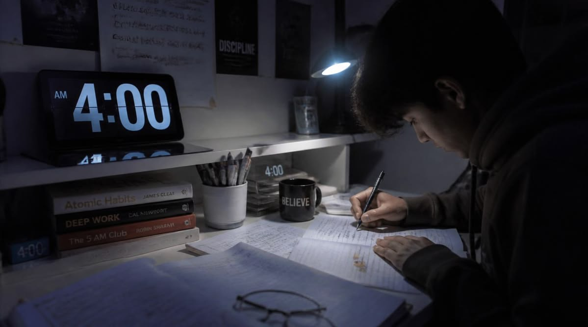
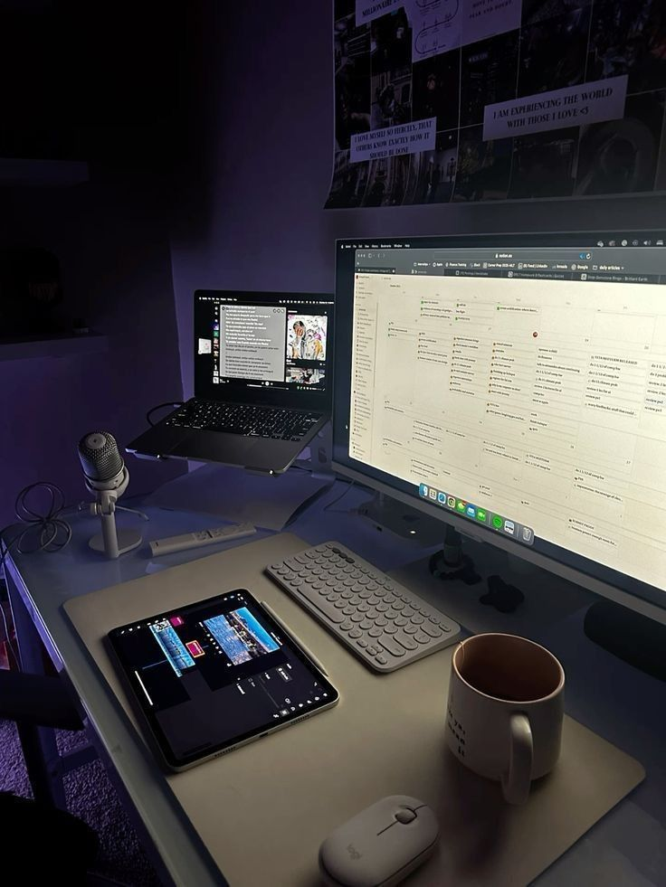

Vida universitaria
25 de julio de 2026 · 6 min de lectura
Aprender sin vivir corriendo
Una forma más realista de organizar las clases: menos listas imposibles, más prioridades y pausas dentro del día.
Explorar artículosRevista estudiantil sobre aprendizaje y vida en El Salvador

Vida universitaria
25 de julio de 2026 · 6 min de lectura
Una forma más realista de organizar las clases: menos listas imposibles, más prioridades y pausas dentro del día.
Explorar artículosNotas recientes
Apuntes breves sobre aprendizaje, ciudad y vida universitaria.

Estudio · 23 julio
Ordenar el escritorio, elegir una meta pequeña y quitar distracciones cambia por completo la primera hora.
Ciudad · 20 julio
Una ruta distinta hacia la universidad demuestra que observar con calma también alimenta las ideas.
Pausa · 18 julio
Salir a caminar no resuelve los pendientes, pero ayuda a recuperar la atención necesaria para retomarlos.
Una tabla sencilla para visualizar estudio, trabajo en equipo y pausas.
| Día | Prioridad | Tiempo | Pausa elegida |
|---|---|---|---|
| Lunes | Lecturas de clase | 2 horas | Caminata corta |
| Martes | Práctica de HTML | 2.5 horas | Música |
| Miércoles | Trabajo en equipo | 2 horas | Café con amigos |
| Jueves | Estilos con CSS | 3 horas | Lectura libre |
| Viernes | Revisión y entrega | 1.5 horas | Tarde libre |
IDEA DE LA SEMANA
“Avanzar también significa reconocer cuál es el siguiente paso.”